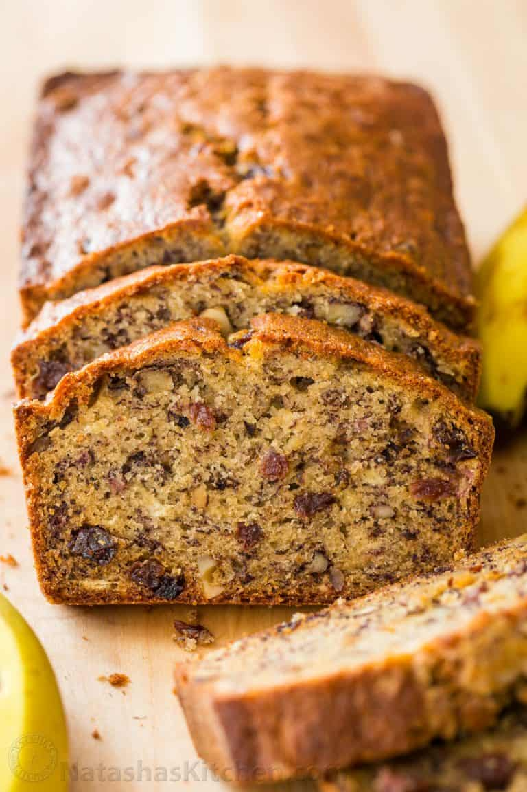

Return to Home
Moist Banana Bread

Description:
Fills your homes with a beautiful aroma while it bakes. Let it rest after baking for flavors to intesify.
Ingredients:
- 3 very ripe bananas
- 1/2 cup (8 Tbsp) unsalted butter at room temperature
- 3/4 cup granulated sugar
- 2 large eggs, lightly beaten
- 1-1/2 cups all-purpose flour
- 1 tsp baking soda
- 1/2 tsp salt
- 1/2 tsp vanilla extract
Optional:
- 1 cup walnuts
- 1/2 cup raisins
Preparation:
- Preheat the oven to 350℉. Grease and flour a bread loaf pan (9.25 long x 5.25
wide x 2.75 deep). Lightly roast walnuts on a skillet, continuously stirring so they
won't burn. Coarsely chop and cool to room temperature.
- In a mixing bowl, cream together 8 Tbsp softened butter and 3/4 cup sugar
- Mash bananas with a fork until the consistency of chunky applesauce and add
them to the batter along with 2 eggs, mixing until blended.
- In a separate bowl, whisk together: 1-1/2 cups of flour, 1 tsp of baking soda
and 1/2 tsp of salt. After whisking, add to batter.
- Add 1/2 tsp of vanilla extract and mix in chopped walnuts and raisins. Pour into
prepared loaf pan. Bake at 350℉ for 55-60 minutes or until a toothpick inserted
into the center comes out nearly clean. Let banana bread rest for 10 minutes before
transferring to a wire rack.
Congratulations! Enjoy your Banana Bread!
Source
Home